Since 2010, we've been helping travel lovers like yourself, unplug from the chaos, follow their bliss, and travel more and create better memories on our travel website.
We've made it happen no matter our life stage - solo travel, couples travel, expat travel, digital nomad travel, RV travel, and of course, travel with kids.
Our website has been featured by notable publications like Lonely Planet, Travel & Leisure, Skyscanner, Expedia, Afar, Pinterest, and Social Media Examiner.
Bungee jumping is an action-filled recreational activity that involves head-first jumping from a tall structure with an elastic cord.
Bungee jumping is an action-filled recreational activity that involves head-first jumping from a tall structure with an elastic cord attached into participants' feet. That tall structure can be a building, crane, bridge or even a helicopter. The first modern bungee jump was in 1979 and since then the sport became widely popular. Bungee jumping is one of the most enjoyed extreme sports and available in almost every destination in the world.
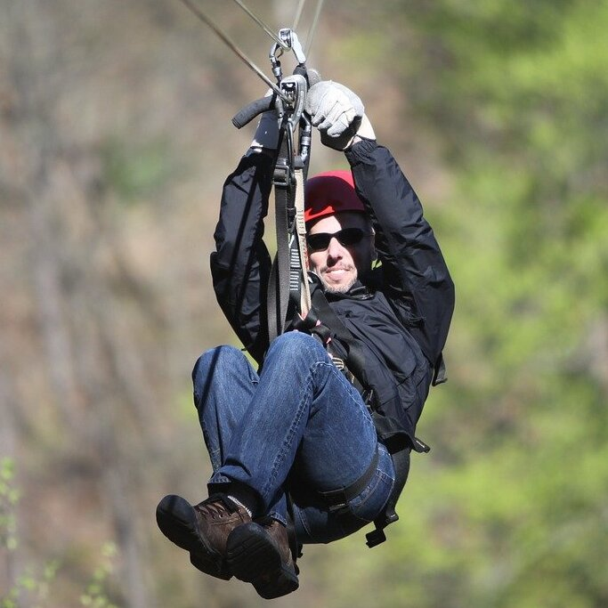
Zip lining is an action-filled recreational activity that involves riding a steel cable on a protective seat.
Zip lining is an action-filled recreational activity that involves riding a steel cable on a protective seat or a belt between two points and generally on a valley that exhibits spectacular sceneries. Origin of zip lining is highly practical and used in the Himalayas and Alps as a way of transportation and observation in Costa Rica without disturbing the natural environment. Zip lining as a recreational activity is fairly new; it is around since the late 20th century. Today, zip lining is a growing outdoor activity with millions of participants around the world.
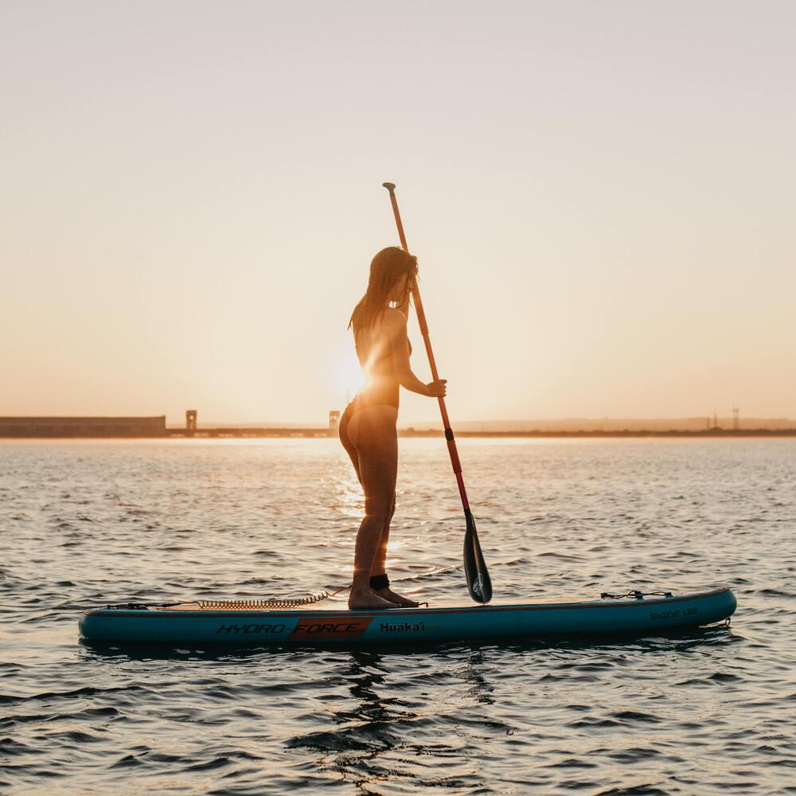
Stand up paddle boarding (SUP) offers a fun way to play on the water, with the added benefit of a full-body workout.
Stand up paddle boarding (SUP) offers a fun way to play on the water, with the added benefit of a full-body workout. And, since you stand at full height on your board, it gives you a unique vantage point for viewing what’s down under the water and out on the horizon.
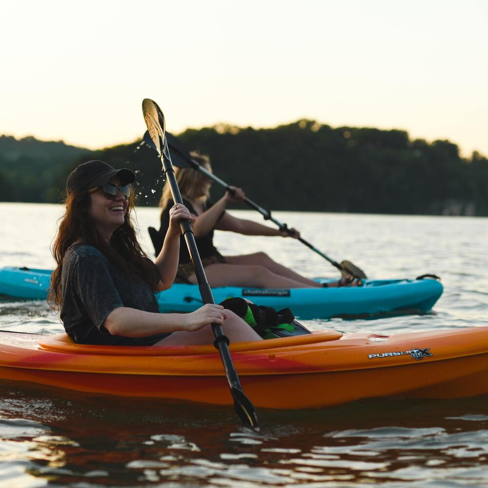
Kayaking is a versatile watersport is a great way to spend quality time with friends and family while exploring nature from a new point of view.
Kayaking is a versatile watersport is a great way to spend quality time with friends and family while exploring nature from a new point of view. Once you try kayaking, we’re positive you’ll love it. Though many other watersports are fantastic ways to enjoy a day off the dock, we believe kayaking provides a number of advantages that make it unique to other activities.
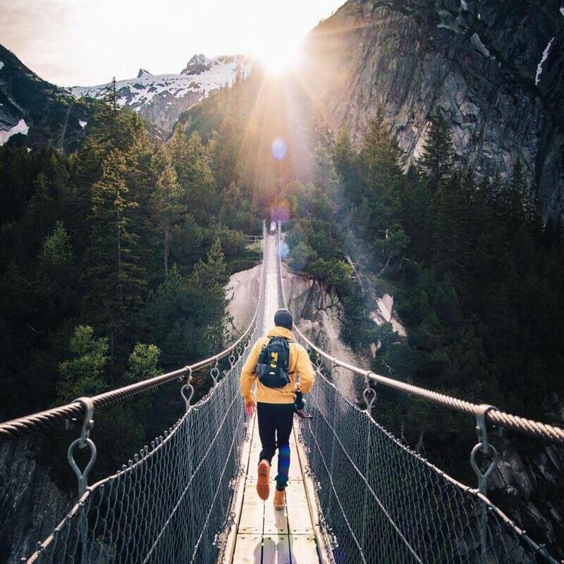
Memorable outdoor experiences
Since 2010, we've been helping travel lovers like yourself, unplug from the chaos, follow their bliss, and travel more and create better memories on our award-winning family travel website.
Since 2010, we've been helping travel lovers like yourself, unplug from the chaos, follow their bliss, and travel more and create better memories on our award-winning family travel website. We've made it happen no matter our life stage - solo travel, couples travel, expat travel, digital nomad travel, RV travel, and of course, travel with kids. We hope this site gives you some inspiration (and handy tips) to go and chase your own adventures. Travel is the best kind of education so go get lost, even if it’s just outside your own doorstep!
Featured products
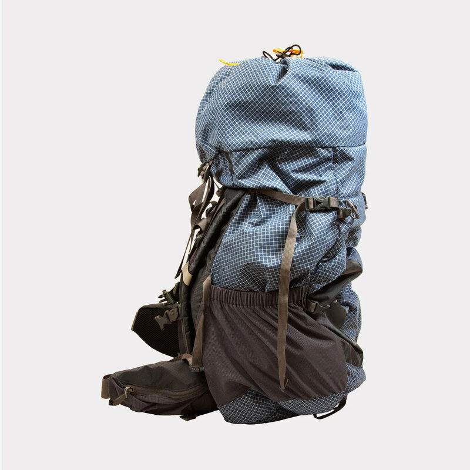
Sports Outfitter Backpack
Color:black/blueHeight:110cmWidth:50cmWeight:2kg
ALL-PURPOSE ULTRALIGHT PACK: XXL capacity, lightweight pack with enough room for all the gear you’ll need for an extended outdoor adventure; For all kinds of travel. FIVE-STAR COMFORT: Multi-position torso adjustment custom fits a wide range of body sizes; Durable back panels are molded foam to provide maximum comfort and airflow; Backpack for men and women. TRUSTED QUALITY: Beyond Basics backpack by TETON Sports who has thousands of 5-star reviews; Large sleeping bag compartment, multi-directional compression straps, gear ties, and multiple pockets for strategic packing.
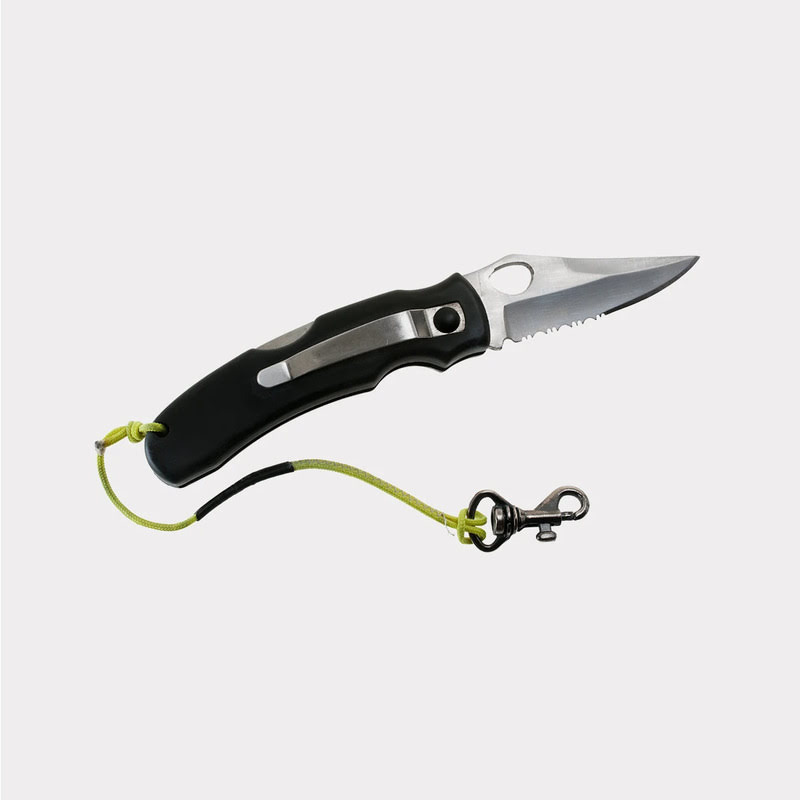
S.S. Folding Knife
Color:BlueLength:18cmBlade:8cmWeight:110g
DURABLE: Blade is made of reliable 7Cr17MoV Black Oxide High Carbon Stainless Steel with a black, aluminum handle. DEPENDABLE: Quick and easy access with the convenient pocket clip, finger flipper and ambidextrous thumb knobs making it ideal for everyday carry. SECURE: Have confidence that the blade will not slip with the security of the liner lock.
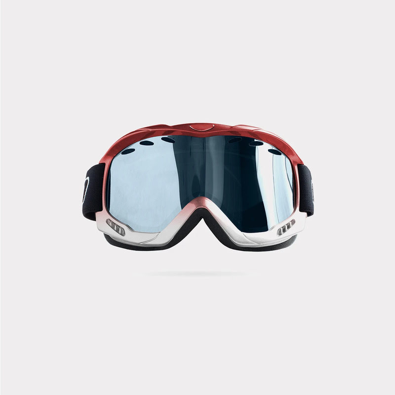
Ski Googles Mask
Color:YellowHeight:15cmWidth:25cmWeight:356g
PERCEIVE Cloudy Burst spare lens, MFI face mask, and microfiber goggle bag included; Women's-specific fit for slightly smaller faces; Fits small and medium faces; Helmet compatible. MAGNA-TECH uses magnets for quickly changing lenses and a secure lens-to-gram seal; PERCEIVE lens for high-contrast vision and terrain defining clarity; Coated for unmatched smudge, scratch, and moisture resistance; Thermoplastic polyurethane frame is durable and lightweight. MFI technology (Magnetic Face Mask Integration) uses magnetic connection to seal your face to your goggles; No-slip silicone strap keeps the goggles in place; Over the Glass compatible frame fits over prescription eyewear; Wall-to-wall vision provides an ultra-close fit.
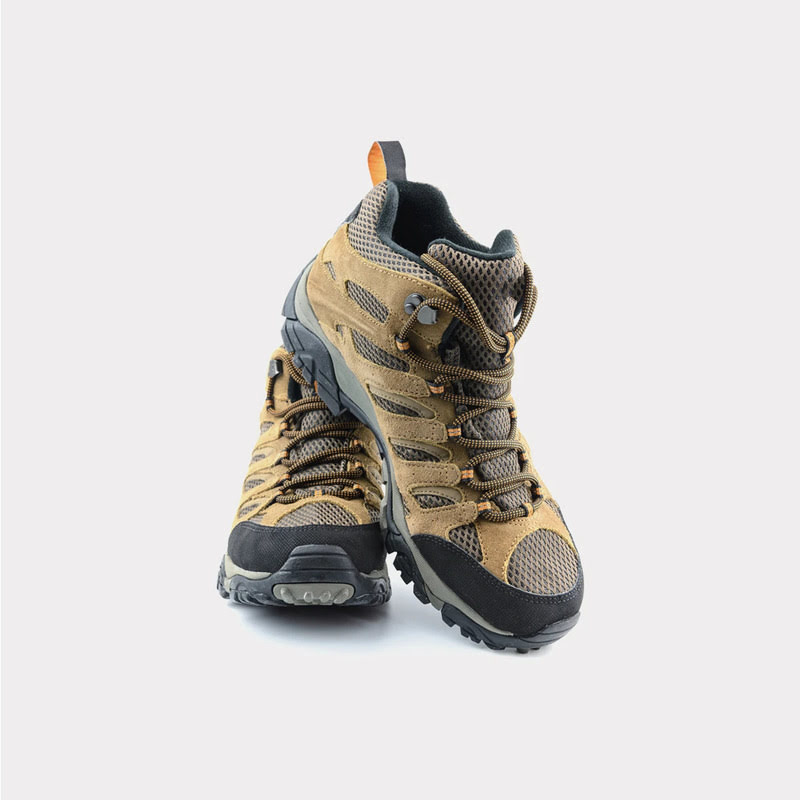
Suede Waterproof Boots
Color:brownWaterproof:yesHeight:40cmWeight:1.2kg
ADVANCED TECHNOLOGY: This Columbia Men's Newton Ridge Plus II Suede Waterproof hiking boot features our signature lightweight midsole for long-lasting comfort, superior cushioning, and high energy return as well as our high-traction grip outsole. QUALITY MATERIALS: Waterproof suede and leather make up the construction of this boot for a protective yet stylish silhouette and build. ADJUSTABLE FEATURES: A lace-up closure ensures an adjustable, secure fit. DURABILITY: Metal hardware and a seam-sealed construction makes this hiking boot durable enough to withstand rain, muck, puddles, and more.
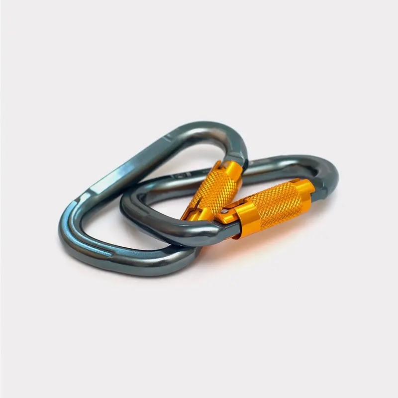
Climbing Button Alloy Carabiner
Color:blueWidth:5cmHeight:15cmWeight:96g
Mini Carabiner Design:The cute small carabiner made from superior durable lightweight aircraft aluminum material.Elegant, strong and practical,durable and last for long time use. Latest Improved Design?These black carabiner hooks are designed with unique D shape ring and long nut buckle, and these 1/2/5pcs carabiners come. which is convenient and practical for storage. High Quality: Improved high quality clip spring.Durable and easy to use. can be used with one hand. Carabiner lock gate prevents items from unwanted detachment.For security,it is not recommended for climbing, ice climbing and high-altitude games.
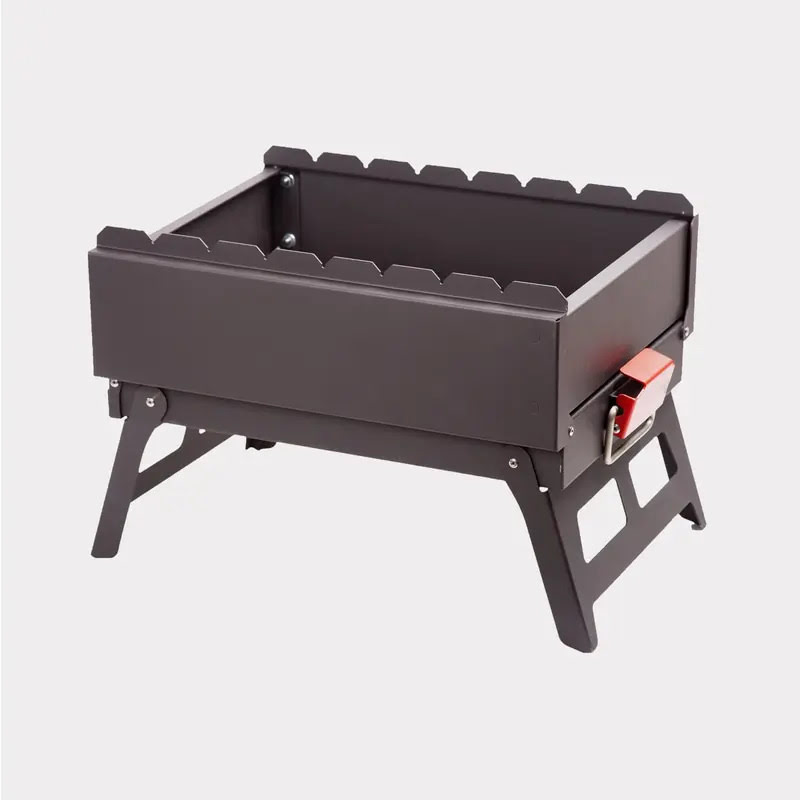
Charcoal Grill
Color:black/redWidth:50cmHeight:110cmWeight:5kg
150-SQUARE-INCH CHROME PLATED GRATE: The 150-square-inch chrome plated cooking rack gives a spacious cooking surface is able accommodate lots of food at one time while still distributing heat evenly and efficiently. DUAL VENTING SYSTEM: Features a Dual venting system, giving you the ultimate charcoal management and temperature control. THREE SECURE LID LOCKS: The grill features three secure lid locks for easy and safe transport. COMPACT ENOUGH TO TAKE ANYWHERE: Measures 14 x 14 x 15 inches and weighs only 2 lbs. , making it easy for transport and ideal for decks, patios and balconies, camping, tailgating and more.
Popular packages
Kayaking Tour Package
Kayaking is a versatile watersport is a great way to spend quality time with friends and family.
$250
Kayaking is a versatile watersport is a great way to spend quality time with friends and family while exploring nature from a new point of view. Once you try kayaking, we’re positive you’ll love it. Though many other watersports are fantastic ways to enjoy a day off the dock, we believe kayaking provides a number of advantages that make it unique to other activities.
Islands Tour Package
Explore the beauty of Asia's best beach, Radhanagar Beach that opens serenity and relaxation for the visitors.
$350
Explore the beauty of Asia's best beach, Radhanagar Beach that opens a world of serenity and relaxation for the visitors. Stay on a beach side resort and relish the real meaning of Leisure. Hop on a private ferry cruise with your loved ones and travel through the famous Islands of Andaman. Witness the light and sound show at Cellular Jail that will take you back to the struggling days of India’s Independence.
Hiking Tour Package
As the mist lifts off the mountains and over the Inca ruins, Machu Picchu evokes an otherworldly feeling.
$200
As the mist lifts off the mountains and over the Inca ruins, Machu Picchu evokes an otherworldly feeling. It’s one of the world’s most incredible archaeological sites, with a breathtaking location to match. With all that Machu Picchu has to offer, it’s easy to understand why so many are drawn to the visitor heartland of Peru. You could hike through cloud forests along the classic Inca Trail, fulfil your Andes experience on the Quarry Trail or challenge yourself on the Choquequirao trek – it's up to you.
Mountain Tour Package
Experience the wonder of the wilderness on this full-day private Blue Mountains tour from Sydney.
$450
Experience the wonder of the wilderness on this full-day private Blue Mountains tour from Sydney. Leave the city lights far behind as you journey into the lush valleys, waterfalls, gorges, mountains, and forests that have shaped life here for tens of thousands of years. You can also opt to add on a visit to Featherdale Wildlife Park or swing by Scenic World and take a trip on the cable car. Visit the Three Sisters rock formation and discover its Aboriginal history. Go for a scenic bushwalk out to the stunning Wentworth Falls.
Surfing Tour Package
This is the ideal package for intermediates and experts who want to taste some more adrenaline on their surf sessions.
$350
This is the ideal package for intermediates and experts who want to taste some more adrenaline on their surf sessions. On this package you're free to choose the kind of wave and the kind of break you want. Tell our guides about your goals and they'll lead you to the best surf spot around to satisfy your expectations. That's why every spot is chosen daily according to your surf level and weather conditions.
Cycling Tour Package
Great island cycling, panoramic views and endless adventure on this 4-day camping weekend.
$200
Our 4-day bike touring journey offers adventurers a quick weekend getaway highlighting the best riding and camping of Washington’s famed San Juan Islands. Great snowcapped peaks rise all around as scores of marine mammals and shorebirds bask on the craggy coastline. Whales and dolphins feed in the protected waters while cyclists enjoy the ‘punchy’ terrain on low traffic roads, enjoying the world-class scenery of Puget Sound.
client's reviews
These guys were great! The main guide, \"Tom Cruise\", was witty and informative. He made sure everyone had a great time and kept the jokes coming throughout the day.
Mark Smith
a month ago
This would have to be the highlight of my holiday thus far. The guides and boat crew were entertaining and the activities were amazing especially the snorkelling. I highly recommend!!
Kelly Preston
3 weeks ago
Absolutely love their service to Phi Phi island. Great team. Very knowledgeable. Highly recommend! Went with this company after a lot of looking around and turned out to be amazing.
Jonh Casher
3 months ago
Had booked airport transfers and Phi phi island tour package and was not disappointed. Everything was well organised. Our tour guide was very informative and had a good sense of humour.
Joan Rivers
1 year ago
We booked two tours and our taxi back to the airport with Phuket Best tours, and we are happy we did it! The tours were very well organized and fun, one to the Phi Phi Islands and one to the Big Buddha with ATVs.
Jeremy Clark
6 months ago
Fantastic Phuket experience courtesy of Phuket Best Tours in Kata. Mr Chai and his son Tat are wonderful hosts and had the best packages made for us. Best way to explore Phuket with honest tour operator Mr Chai.
Lee Chang
4 months ago
Subscribe now
Want to know how we've made a lifetime of travel for 12 years? Insider tips and updates! This is what gives us incredible memories to share around the campfire. Join our community for insider tips and updates!
Our daily posts
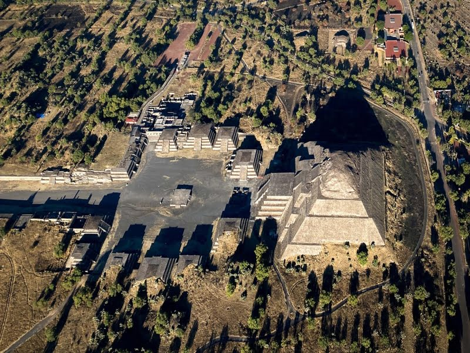
19th Apr 2021By Admin
Trueke Tours Mexico
At the beginning of the morning, we will leave Mexico City in the direction of the State of Morelos, in which we will visit the Magical Town of Zacualpan de Amilpas, which lives its history and tradition at its rhythm, conserving some of its traditions such as the Barter Exchange. it is an ancestral economic system, which is based on the exchange of products without using money, has survived all the times and regimes in which it is still used today in Zacualpan, the town will be visited and then make the Barter in the market . During our visit we will enjoy this millenary tradition in which we will barter the basic basket with local producers and merchants and in this way contribute to the local economy while enriching ourselves with the history and tradition of Zacualpan de Amilpas. Later it will depart to the Magical Town of Tepoztlán located in the foothills of Tepozteco, represented as a unique combination of ancient traditions and wisdom that enrich its many cultural manifestations, which will be given in the Town to grant them free time to take advantage of the cultural wonders offered by Tepoztlán as the former Convent of the Nativity, the market to offer to taste the typical food of the place or visit El Tepozteco National Park.
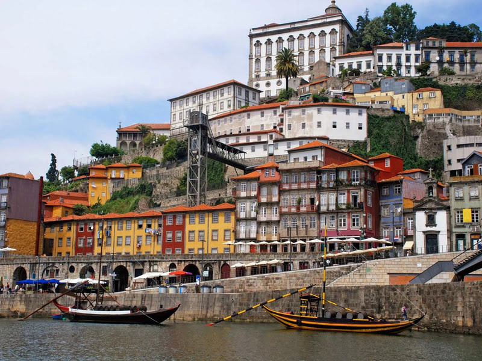
5th Feb 2022By Admin
Portugal Travel
Starting in lively Lisbon and ending in proud Porto, our Heart of Portugal tour combines a dazzling mix of Roman, Moorish, and Baroque architecture with the small towns, coast, food, wine, and music of this tradition-rich country. Venturing far from the tourist crowd, this tour has a real \"Europe in the old days\" feel to it. Your Rick Steves guide will take you on an intimate adventure that connects you with the Portuguese people, from salty harbors to sun-baked farms to lovingly tended vineyards. Join us for the Heart of Portugal in 12 Days!
15th Dec 2021By Admin
Top 10 in Mauritius
Grand Bassin (Ganga Talao). Sitting some 500 metres above sea level and set amongst the verdant mountainous southwest, the volcanic crater lake of Ganga Talao is one of the best places to visit in Mauritius both for the beautiful wild setting and to dig a little deeper into the islands predominant religion, Hinduism. Situated on the island's southwestern tip, the hypnotising magnificence of Le Morne Brabant is more than deserving of its UNESCO listed status. Just a brief boat ride from the mainland, the islet of Ile Aux Aigrettes is one of many isles and boat excursion tour options to consider. What makes this a must-visit place for wildlife enthusiasts in Mauritius is the focus on scientific research within the nature reserve.
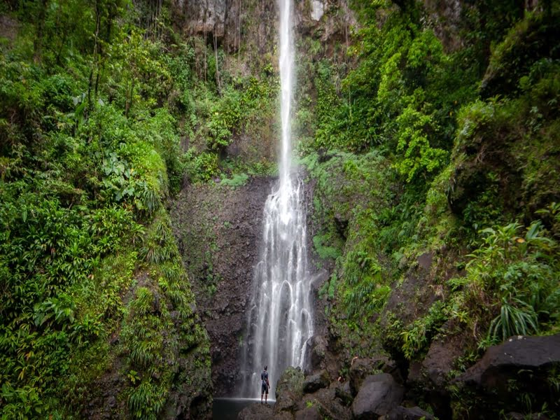
25th Sep 2021By Admin
Dominica Travel Guide
Where to start with Dominica, wow! This country absolutely amazed me beyond any expectations. Coming into land on the tiny runway, I knew this was going to be a special trip, and I’m excited for your adventure to the nature island. Hopefully this Dominica travel guide will give you the insight you need to make the most out of your trip to this incredible island, one which now owns a little slice of my heart. A land where the mangos are delicious, the waters refreshing, and the honking of horns will make you smile as friendly faces exchange brief greetings through windows. Of course, the main draws when travelling to Dominica is nature itself. Hiking, water sports, and enjoying the slower pace of life form the basis of the perfect Dominica trip, but there are also other ways to keep your self entertained.
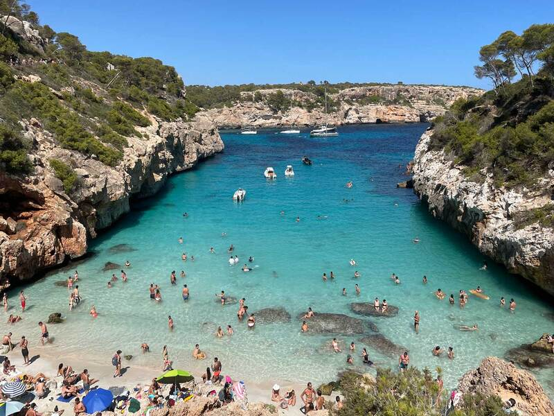
18th Apr 2022By Admin
Reasons to visit Mallorca
Recently I was writing a list of places my friend should visit in Spain, and as I read him out my proposed agenda, he scoffed at the idea of Mallorca. ‘Isn’t that just Magaluf, all about the booze and wild nights out?’ he asked, and I remembered that was exactly what I had expected when I boarded my flight to Mallorca a few years back. But the truth is, I barely did Mallorca justice because I went with that expectation myself. I was looking forward to a holiday, think crystal-clear waters, days by the beach, afternoons snacking on tapas and relaxing in the lush 5-star hotel in Mallorca I’d booked into. I even left my camera at home so I could completely switch off, with just a few changes of clothes and my iPhone in my pocket. What I found in Mallorca though was so much more than I had been expecting. If you are a Brit like me, then the reputation of Magaluf is something you will be well aware of; but in reality, Magaluf is such a tiny part of this island there is a whole host of history, culture and amazing nature to enjoy.
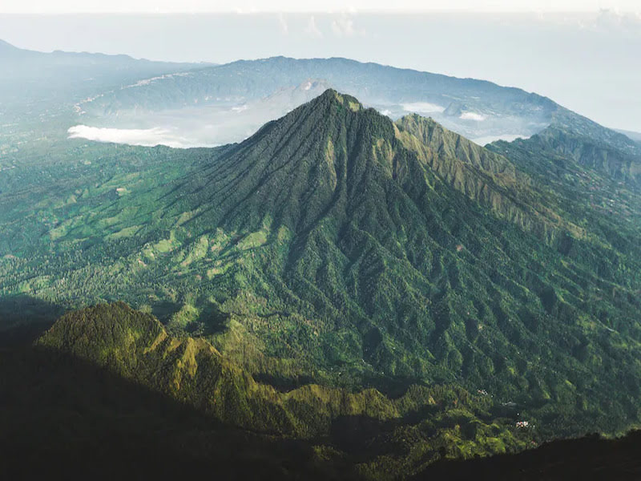
19th May 2022By Admin
Indonesia Travel
Cultural Hub of Ubud, Bali Ubud is full of vegan cafes, yoga retreats and lush green rice paddies. There are a million and one things to do in Bali, but if you want to slow down, a few days in cultural Ubud is a winner. Visit the famous water temples, enjoy traditional dance and explore the famous Monkey forest before taking in the lush green landscape. The Ijen sulphur mines are not only a dangerous workplace for underpaid staff but now a popular tourist attraction thanks to the ‘blue fire’ that is emitted from the lake at night.